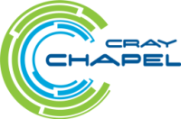

Chapel Google Summer of Code
¶
Contents:
Project List
Student Submitted Projects
Compiler
Runtime
Performance
Libraries
Compatibility
Demos
Steps to Apply
1. Familiarize yourself with the project
2. Help the Chapel developers get to know you
3. Find a task that excites you
4. Prepare a project proposal
1. Introduction
2. Contact
3. Coding experience
4. Survey
5. Prerequisites
6. Self-assesment
7. The task
8. Contributor Agreement
Contributing
Coding Challenges and Idioms
Ports
Bugs
Documentation
Coverity
Frequently Asked Questions
GSoC Resources:
Chapel GSoC Profile Page
GSoC Timeline
GSoC Student Manual
GSoC FAQ

Chapel GSoC
Navigation
Project List
Steps to Apply
Contributing
Frequently Asked Questions
Related Topics
Documentation overview
Next:
Project List